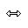

鼠标
简介#
本指南，将会介绍使用鼠标所需的技能。
技能等级#
初级#
认识标准鼠标的五个按键，分别是左键、右键、中间、上滚轮和下滚轮，然后选择适合的握法、指法。
鼠标按键#
鼠标有很明显且巨大的「左键」与「右键」。(1) 然后是中间的滚轮，手指向上滑动会触发「上滚轮」，向下滑动会触发「下滚轮」。 最后按下滚轮，就是「中键」。
- 通常左键是主要按键，而右键是次要按键，不过可以在设置里更改。
握法#
-
趴握
手掌、手指贴在鼠标上。优点是稳定性和舒适度。
-
抓握
手掌贴在鼠标上，指尖接触按钮，手指其他部分悬空。平衡了趴握与指握的优缺点。
-
指握（捏握）
仅有指尖接触按钮，手掌和其他手指部分悬空。优点是精确性和灵活性。
鼠标的握法也与鼠标的形状有一些关系，比如 Apple 的 Magic Mouse 鼠标非常扁平，不适合趴握。而一些较重的鼠标， 可能不适合指握。
握持鼠标的手部出现疼痛、红肿等情况，俗称的「鼠标手」，其实就是重复性劳损。不同的握法，对手部造成的影响也有不同。 风险从低到高，分别是：趴握 < 抓握 < 指握，因为手对鼠标的接触面越小，就越需要使用力量控制鼠标，这会使腕管压力过大， 最终导致重复性劳损。4
曾有游戏直播主表示，握持鼠标的手很痛，所以很长时间都不再用鼠标玩游戏，期间只能玩手柄游戏。所以，为了能健康持续使用电脑， 最好握持方式选择轻松的，这样能缓解手部疲劳。
垂直鼠标或人体工学鼠标，也许能缓解「鼠标手」，具体可以查询相关资料。5
指法#
常见的鼠标指法有：
- 食指左键与滚轮，中指右键。6
- 食指左键，中指滚轮与右键。（推荐）
- 食指左键，中指滚轮，无名指右键。（推荐）
鼠标指法差异
像交叉筷、「二指禅键盘指法」一样，物品的使用方法，没有唯一正确的方法，只要满足使用者基础的功能，那就是正确的。 但是不同的使用方法，会有一些性能差异，比如二指禅在打字速度方面会有一些瓶颈。并且是个人习惯，因此重新学习一套新的方法， 可能存在难度，因为个人习惯也是沉沒成本，甚至是最昂贵的沉沒成本。
不过指法 1 和 2 都有一些缺陷，前者无法同时使用左键和滚轮，后者无法同时使用右键和滚轮。算是指法造成的冲突， 都会导致输入受限，只是键盘的按键冲突是硬件问题，而鼠标的按键冲突指法问题。比如：
- 复制文本时，按住左键的同时，如果不能滚动滚轮，那么超过画面的文本就无法选中了。
- 在 Apex 中一边滚轮跳，一边开镜瞄准和开火，指法 1 和 2 就会被卡住。
也许鼠标指法意外的重要，但是被忽略了。最好的方法还是在学习使用时，就了解各种指法的利弊，根据需求使用合适的方法吧。 而不是已经习惯了缺陷较大的指法，而在需要时，花费许多精力变更习惯。
附言：可能许多人都是指法 1（包括系统开发者），所以在 Windows 系统中，无法同时按住鼠标左键拖动文件／内容， 并使用滚轮滚动。（也可能是某种 Bug）
中级#
了解鼠标是否正常工作，然后是移动、点击、拖动以及双击的操作方式，以及数种常见的指针图标。
检查鼠标#
鼠标的左中右键，通常不会有空键程，不需要使用很大的力量按下，只要能听到按下的声音或感到段落感，就表示成功触发。
如果需要更大一些的力量才能触发，可能说明鼠标的微动开关已损坏，需要更换新的微动开关， 或者更换鼠标。
操作#
下面是以 GCFGlobal 的 Mouse Tutorial（鼠标教程） 为灵感制作的交互式小游戏。目前仅有拖动文件的训练，其他的训练正在制作中。
来源
文字来自 SolidZORO/zpix-pixel-font，其他像 Windows 98 风格的元素， 均是复刻或临摹。
指针图标#
对鼠标的操作，会在电脑屏幕上以光标的形式呈现。而光标在不同的环境下，也会有多种图标呈现。下面的图标是不同光标形态的名称， 图标由 StickyChannel92 绘制：7
| 名称 | 图标 |
|---|---|
| 正常选择 |  |
| 帮助选择 |  |
| 后台运行 | |
| 忙 | |
| 精确选择 |  |
| 文本选择 | |
| 手写 |  |
| 不可用 |  |
| 垂直调整大小 |  |
| 水平调整大小 |  |
| 斜左上调整大小 |  |
| 斜右上调整大小 | |
| 移动 | |
| 候选 | |
| 链接选择 |  |
{kind=link}
{kind=link}
{kind=link}
{kind=link}
{kind=link}
{kind=link}
{kind=link}
版权
该文件夹的 15 张图片来自 Wikipedia 用户 StickyChannel92：https://en.wikipedia.org/wiki/File:CursorListHorizontal.png， 有进行切片、无损压缩（pngquant），除此之外没有任何更改。
{kind=link}
该图片的分享协议为 Creative Commons Attribution-Share Alike 4.0 International。
〔之后详细介绍一些常见的光标状态〕
高级#
能够使用文件管理器中的常用功能，包括运行软件、重命名、复制等。
graph TD
file[文件]
select[选中状态]
run[运行]
context_menu[环境菜单<br>（右键菜单）]
rename[重命名]
copy[复制]
select -->|右键键点击| context_menu
file -->|"`两次左键点击<br>（快速）`"| run
file -->|右键键点击| context_menu
select -->|"`两次左键点击<br>（快速）`"| run
select -->|Ctrl + C| copy
context_menu -->|【复制】| copy
file -->|左键点击| select
context_menu -->|【打开】| run
context_menu -->|【重命名】| rename
file -->|"`两次左键点击<br>（慢速）`"| rename测验#
鼠标技能测验
指南#
参考资料#
-
Redragon, Understanding Mouse Grip Styles: Fingertip vs. Palm vs. Claw, Redragonshop, 2023-11-24. (参照 2024-07-08). ↩
-
Fingertip vs. Palm vs. Claw, CORSAIR:EXPLORER. (参照 2024-07-08). ↩
-
Dominik Schmalzried, Patrick Schmalzried, Optimal grip for a gaming mouse, Welcome to Zaunkoenig, 2019-01-31. (参照 2024-07-08). ↩
-
pivotalphysio, Repetitive Wrist Strain Injury in Gaming, Pivotal Physio, 2018-06-08. (参照 2024-07-08). ↩
-
How to Hold a Mouse: 3 Grips, Juniper Office, 2022-07-21. (参照 2024-07-08). ↩
-
StickyChannel92, File:CursorListHorizontal.png, Wikipedia, 2020-02-24. (参照 2024-07-08). ↩
{kind=link}
（由于更新时间是手动更新的，所以部分页面内容已更新，但忘记修改新的日期了……）